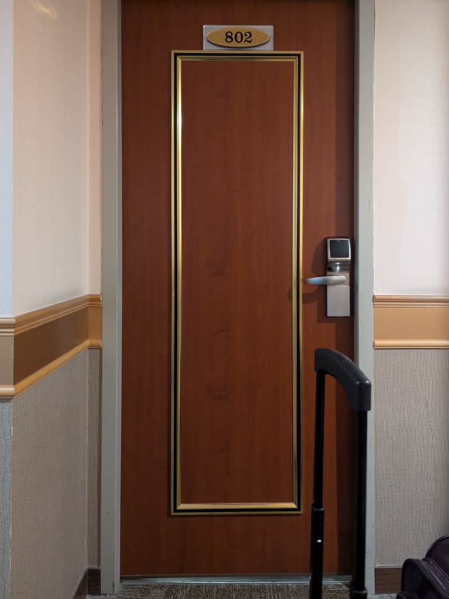
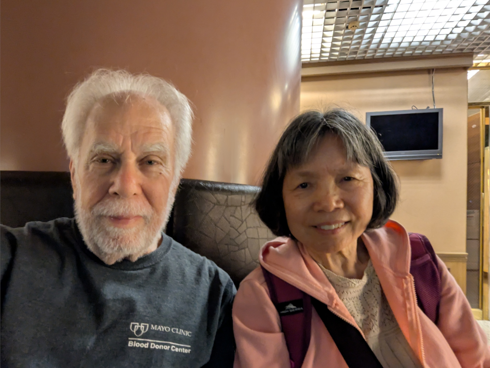
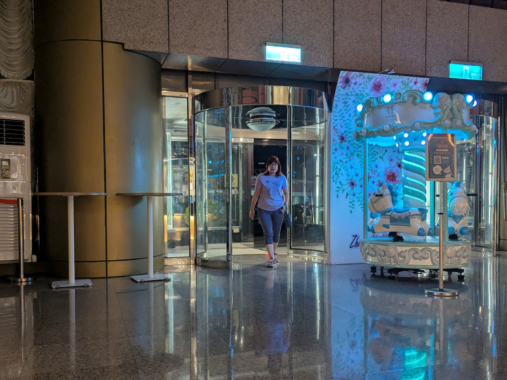
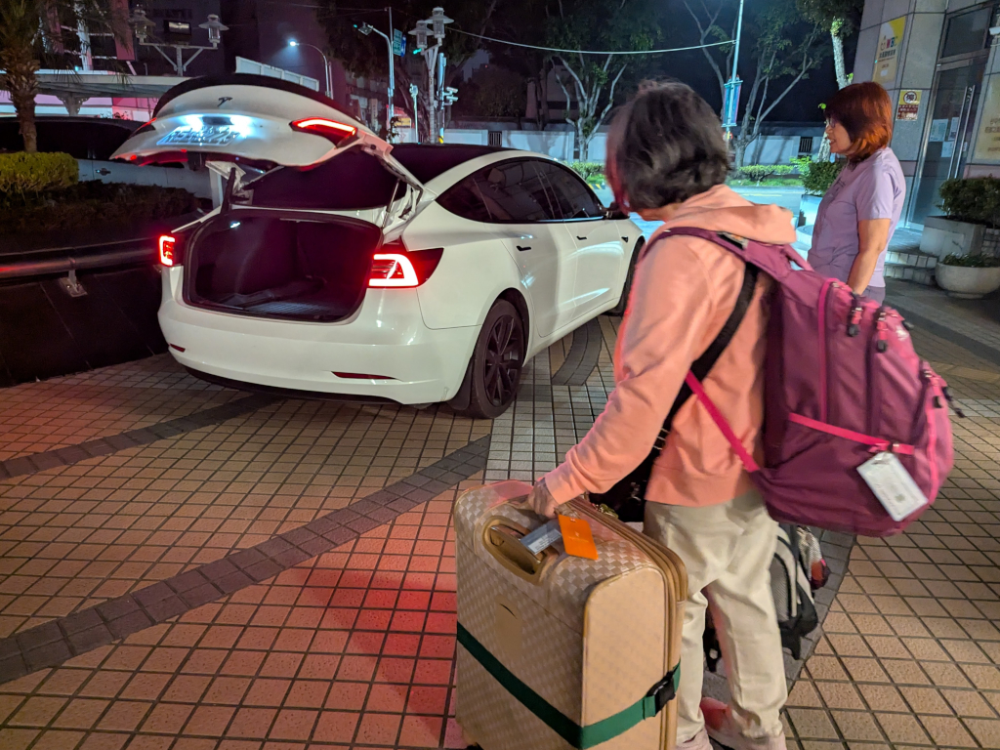
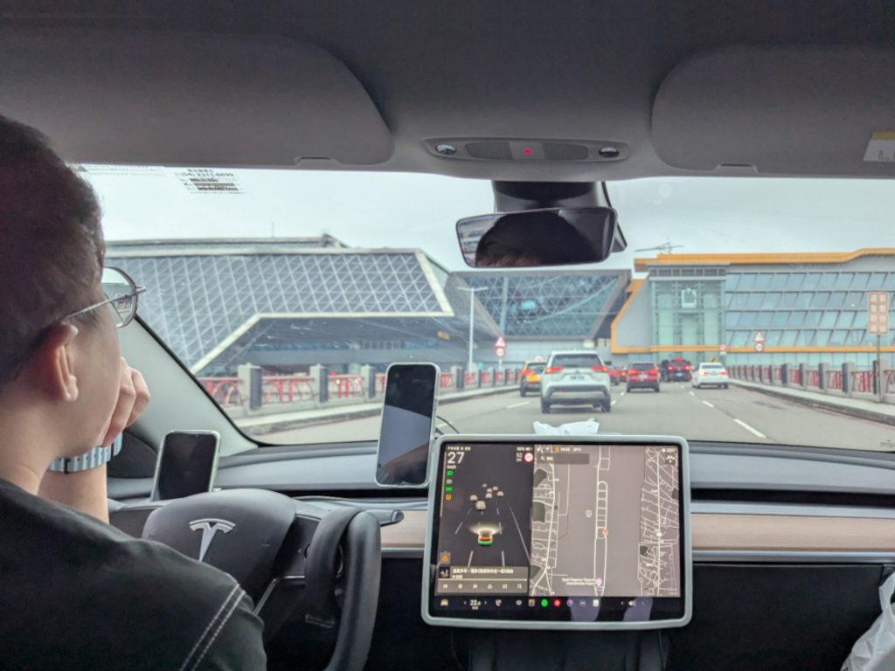
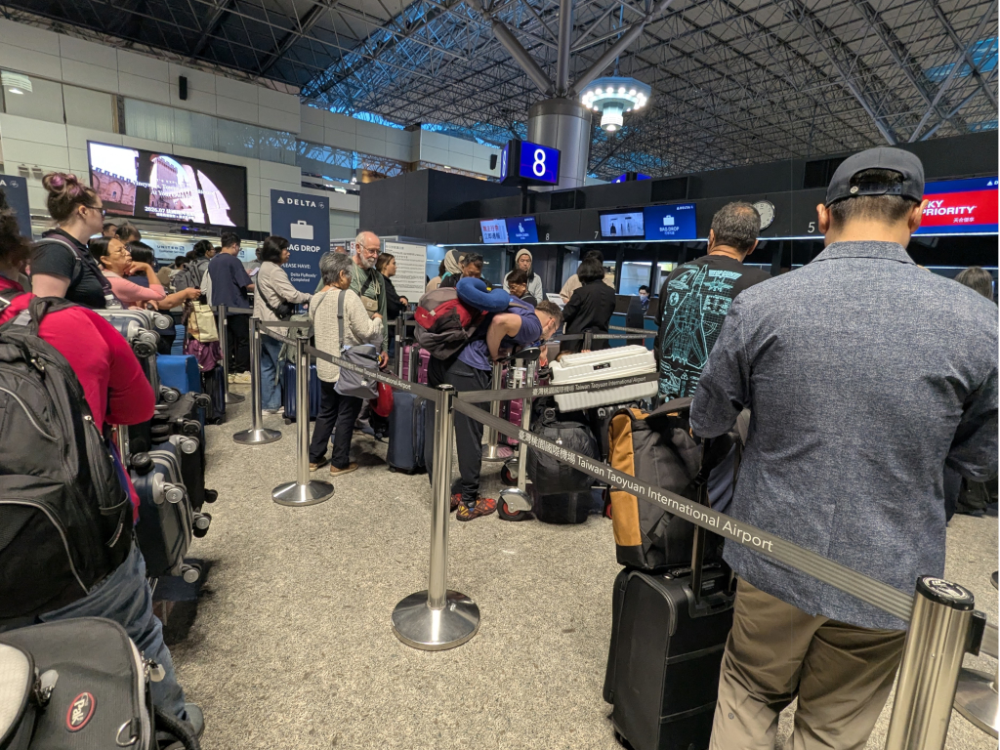
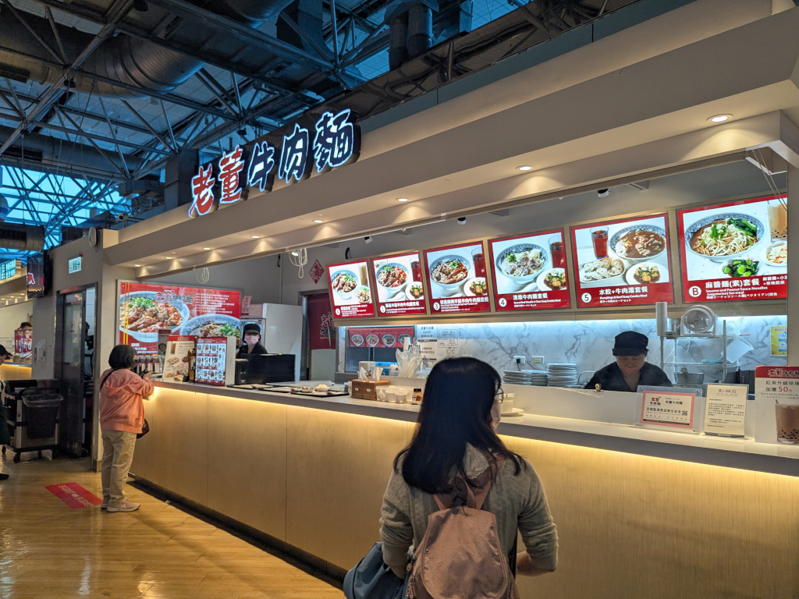
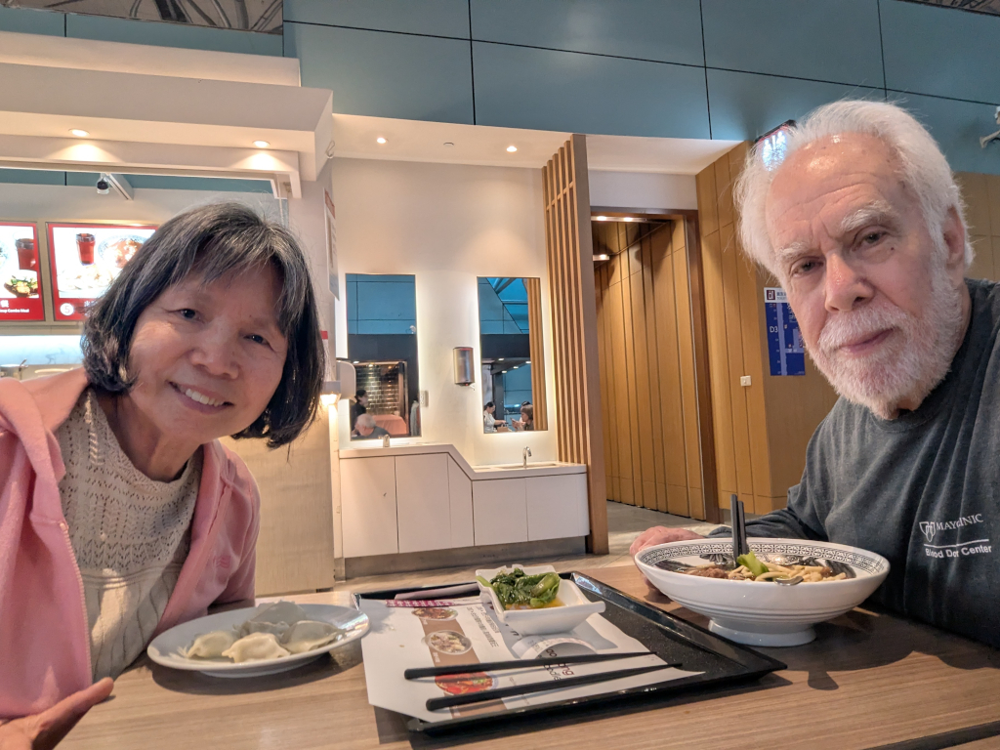

April 17, 2026
Back to Main
 At 4:40 AM, we locked Room 802's door for the last time and made our way down to the lobby to checkout. We liked the room so much that Mei-O plans to ask for it the next time we come. Our ride to the airport in Taipei wasn't due to arrive until 5:00, and anyhow, we had to wait for... ...Meihui who was coming to see us off. She showed up about 4:50, in plenty of time to exchange a few gifts. Mei-O gave her the honey, ginger, and shampoo we had left over, and she gave Mei-O a couple of books that Wenshuang had illustrated. And then it was time to leave. We were picked up by a young man in a white Tesla (which was arranged by Meihui. Once again, much thanks to her), and headed north on our hour-and-a-half ride in the darkness to the Taoyuan Airport in Taipei. As we got closer, the sky lightened and the traffic picked up. Around 6:30, we arrived at the airport and pulled up to the Departures terminal. The line to check in - get our boarding passes, check our luggage, etc.) - wasn't too bad, and everything went smoothly and relatively quick. Once we were through with that, and after an easy pass through security, ... ...we needed to find some breakfastnoteIn past years, because our hotel room included the all-you-can-eat buffet breakfast
(which didn't begin until 6:30), the hotel provided us with a bag breakfast to take along on the ride to
the airport. It wasn't much, something like a ham and cheese sandwich, an apple, and a cup of coffee,
but this year we got nothing. ! One of the things I wanted to eat during this trip was
牛肉麵 (beef noodle soup), and I never got the chance, so, even though it was breakfast time, we decided
to eat here at 老董牛肉麵 in the airport's food court, ...
 ...where I had a really great bowl of 牛肉麵 while Mei-O, not wanting to eat too much before our long flight home, just had some 水餃 and vegetables. |
{kind=link}
{kind=link}
{kind=link}
{kind=link}
{kind=link}
{kind=link}
{kind=link}
{kind=link}
{kind=link}